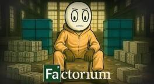

اگر همهٔ عناصر جدول تناوبی را با هم قاطی کنیم چه میشود؟

امروز میخواهیم برویم سراغ یک سؤال که شاید موقع ورق زدن کتاب شیمی دبیرستان، یا حتی همینطوری یکهو مثل یک جرقه پریده باشد توی سرتان. یک چیزی در مایههای خفنترین «چی میشد اگر»های تاریخ علم. فرض کن یک دانشمند یک فکر بکر به کلهاش زده. تمام ۱۱۸ عنصر شناختهشدهٔ جدول تناوبی مندلیف را، از هیدروژن گرفته تا اوگانسون، همه و همه را میخواهد بریزد توی یک مخلوطکن غولپیکر. آره، درست شنیدی. انگار میخواهد یک آش شلهقلمکار مندلیفی درست کند. به نظرت چه از آب درمیآید؟ یک معجون جادویی؟ یک سوپ اتمی خوشمزه؟ بیایید قدم به قدم پرده از این راز برداریم و ببینیم ته این داستان علمیتخیلی چه انتظارمان را میکشد. قول میدهم آخرش فیوز مغزتان بپرد.
اول یک ظرف لازم است
خب قبل از اینکه با کله بپریم وسط این معرکهٔ اتمی، یک لحظه وایسا. اول از همه باید یک چیزی را روشن کنیم. ما نیاز به یک ظرف داریم. نه یک ظرف معمولی. یک چیزی که نه با حرارت ذوب شود، نه با هیچ مادهای واکنش بدهد، نه مثل بادکنک بترکد. یک چیزی در مایههای زرهٔ تونی استارک، ولی ۱۰۰ برابر مقاومتر. چون باور کن رفیق، بدون چنین چیزی همان اول کار بازی تمام است.
حالا فرض کن این ظرف را داریم. شروع میکنیم به اضافه کردن عناصر. اولین چیزی که مثل روز روشن است، قیافههای متفاوتشان است. گازهایی مثل هیدروژن، هلیوم، نیتروژن، اکسیژن، آن فلوئور قلدر و کلر شرور، به همراه بقیهٔ گازهای نجیب، آرام و بیدردسر شروع میکنند به وول خوردن و پخش شدن در فضا و با هم قاطیپاطی میشوند. آن پایینها مایعاتی مثل جیوهٔ نقرهای و برم قرمز تیره یک گوشه برای خودشان جمع میشوند. بقیهشان هم که جامدند. از آن فلزهای نرم و زودجوش مثل سدیم و پتاسیم، که انگار از زندان آزاد شدهاند، گرفته تا فلزهای سنگین و باوقار مثل طلا، پلاتین، سرب، و البته جناب اورانیوم.
همین اول کاری، قبل از اینکه اصلاً به واکنشهای شیمیایی خفن و آتشبازیهای بزرگ برسیم، یک سری اتفاق ریز و درشت میشود. مثلاً فلزهای قلیایی شیطون، یعنی سدیم و پتاسیم، کافی است بوی رطوبت به مشامشان برسد، که قطعاً در آن مخلوط هست، مگر اینکه در خلأ مطلق باشیم که آن هم خودش یک داستان دیگر دارد. سریع دست به کار میشوند و شروع میکنند به واکنش دادن و تولید گاز هیدروژن. حالا این گاز هیدروژن را بگذار کنار اکسیژن همیشه حاضر در صحنه، و یک جرقهٔ کوچک. بله، یک انفجار کوچک همین اول مهمانی داریم که حال همه را جا بیاورد. البته کوچک وقتی است که فقط سدیم و پتاسیم را در ذهنمان داریم. وقتی پای ۱۱۸ عنصر وسط باشد، اوضاع خیلی فرق میکند. خیلی.
مهمانیای که همه با هم سرشاخ شدهاند
حالا برویم سراغ اصل کاری. واکنشهای شیمیایی. اینجا دیگر صحبت از یک معرکهٔ واقعی است. بعضی از این عناصر اصلاً و ابداً چشم دیدن همدیگر را ندارند. مثلاً فلوئور، که به آن میگویند گنگستر جدول تناوبی، با تقریباً هر چیزی که فکرش را بکنی واکنش میدهد. آن هم چه واکنشی. در حد آتش گرفتن و دود و دم. حالا این فلوئور عصبانی را بگذار کنار فلزهای قلیایی خاکی مثل کلسیم و باریم، یا حتی بقیهٔ فلزها. نتیجهاش میشود یک چهارشنبهسوری در ابعاد صنعتی، با تولید یک عالمه نمک مختلف و آزاد شدن حجمی از انرژی که میتواند یک شهر کوچک را به هم بریزد. انگار یک مهمانی خیلی خیلی شلوغ انداختهایم که در آن همه با هم سرشاخ شدهاند و دارند همدیگر را میزنند.
اکسیژن هم که دیگر نور علی نور است. خیلی از عناصر، مخصوصاً فلزها، یکجورهایی عاشق اکسیژناند و تا چشمشان به آن بیفتد سریع با آن وارد واکنش اکسایش میشوند. این یعنی چه؟ یعنی سوختن، زنگ زدن، و کلی واکنش گرمازای دیگر. حالا تصور کن این حرارت به بقیهٔ عناصر هم سرایت میکند. دمای آن مخلوط کذایی شروع میکند به بالا رفتن. آن هم نه یکی دو درجه. صحبت از صدها و شاید هزاران درجه سانتیگراد است، رفیق. در این دما بیشتر جامدها دیگر تاب نمیآورند و ذوب میشوند. مایعات قلقلکنان به جوش میآیند و گازها هم وحشیتر از همیشه منبسط میشوند. فشاری که به دیوارههای آن ظرف جادویی ما میآید سر به فلک میکشد.
آنهایی که تا حالا ساکت نشسته بودند
اما فکر کردی داستان به همینجا ختم میشود؟ نه عزیز دلم. هنوز یک عده از بازیگرهای اصلی وارد صحنه نشدهاند. یک دسته از عناصر هستند که تا الان خیلی ساکت و آرام یک گوشه نشسته بودند، ولی وقتی پایشان به این معرکه باز شود، دیگر هیچکس و هیچ چیز جلودارشان نیست. منظورم عناصر پرتوزاست. از اورانیوم و توریم و پلوتونیم گرفته تا آن عناصر فوقسنگین و ناپایدار مثل اوگانسون. اینها به طور خودبهخود شروع میکنند به واپاشی و از خودشان ذرهٔ آلفا، بتا و پرتو گاما میفرستند.
این یعنی چه؟ یعنی آن مخلوط که تا الان فقط به شدت داغ و پرفشار بود، حالا به طور خطرناکی هم پرتوزا شده. یک چیزی در مایههای قدم زدن در قلب یک راکتور هستهای که دارد از کنترل خارج میشود. یک جهنم به تمام معنا. هم سوزان، هم پرتوزا. این تابش گاما خودش یک پا انرژی است و میتواند مثل قیچی پیوندهای شیمیایی بین اتمها را از بین ببرد و واکنشهای جدید و پیشبینینشده راه بیندازد. ذرههای آلفا و بتا مثل گلولههای نامرئی با هستهٔ بقیهٔ اتمها برخورد میکنند و میتوانند آنها را به عنصرهای دیگر تبدیل کنند.
یعنی چه؟ یعنی جدول تناوبی ما دیگر آن جدول منظم و خوشگل همیشگی نیست. دارد مثل خمیر بازی مدام تغییر شکل میدهد. یک عنصر به یک عنصر دیگر تبدیل میشود و این چرخهٔ دیوانهوار ادامه پیدا میکند. به این میگویند کیمیاگری هستهای در عمل. ولی نه از آن نوعی که دنبال تبدیل مس به طلا بودند. این یکی خیلی خشنتر، بیرحمتر و کاملاً غیرقابل کنترل است. انگار خود طبیعت قاطی کرده.
سوپ پلاسما
حالا بیا یککم عمیقتر به این ماجرا نگاه کنیم. این همه انرژی که از واکنشهای شیمیایی انفجاری و واپاشیهای هستهای بیوقفه آزاد میشود کجا میرود؟ خب معلوم است. همهاش تبدیل به گرما، نور و تابشهای مختلف میشود. دمای آن مخلوط عجیبوغریب آنقدر سر به فلک میکشد که دیگر صحبت از حالت مایع و گاز معمولی نیست. به احتمال خیلی خیلی زیاد اتمها دیگر نمیتوانند الکترونهایشان را دور خودشان نگه دارند. الکترونها از قید هسته آزاد میشوند و تبدیل به یون میشوند. یعنی ما با یک پلاسما طرفیم. همان حالت چهارم ماده که در خورشید و ستارهها پیدا میشود. یک سوپ فوقالعاده داغ و یونیزهشده از هستههای اتمی و الکترونهای سرگردان، که همزمان از خودش موج الکترومغناطیسی قوی و تابش پرتوزا میفرستد. یک چیزی شبیه اتفاقهایی که در کورهٔ هستهای ستارهها میافتد، ولی اینجا خیلی بینظمتر، آشفتهتر و صد البته خطرناکتر.
آن ظرف جادویی ما هم، هرچقدر از ویبرانیوم و هر فلز خفن دیگر ساخته شده باشد، زیر بار این فشار و دمای باورنکردنی بالاخره یک جایی کم میآورد. اگر این مخلوط به هر طریقی به بیرون نشت کند، که با این حجم انرژی احتمالاً این اتفاق میافتد چون هیچ مادهای در دنیا وجود ندارد که بتواند تا این حد مقاومت کند، فاجعهٔ زیستمحیطی که به بار میآید حتی در بدترین فیلم علمیتخیلی هم نظیر ندارد. تمام منطقهٔ اطراف به شدت آلوده به مواد پرتوزا و شیمیایی سمی میشود و برای هزاران سال غیرقابل سکونت خواهد بود. انگار یک تکه از جهنم را روی زمین پیاده کردهایم.
ته دیگ چه میماند؟
حالا یک سؤال خیلی مهم. آیا واقعاً یک مخلوط خواهیم داشت، یا بیشتر شبیه یک میدان جنگ تمامعیار است که در آن عناصر دارند همدیگر را تکهپاره میکنند، به هم تبدیل میشوند و یک آشوب به تمام معنا به پا کردهاند؟ راستش را بخواهی دومی خیلی به واقعیت نزدیکتر است.
آن چیزی که در نهایت، بعد از اینکه تمام واکنشهای سریع و انفجاری اولیه تمام شوند و دما یککم پایین بیاید، که البته این یککم ممکن است هزاران سال طول بکشد، باقی میماند احتمالاً ترکیبی از پایدارترین ایزوتوپهای عنصرهای مختلف خواهد بود. اینها هم احتمالاً در یک ماتریس شیشهای یا سرامیکی از اکسیدها، سیلیکاتها و بقیهٔ ترکیبهای فوقالعاده پایدار گیر افتادهاند. و البته مقدار خیلی زیادی از عنصرهای سنگینتر هم در طول این مدت به عنصرهای سبکتر و پایدارتر واپاشی کردهاند. شاید یک چیزی شبیه آن مواد عجیبوغریبی که از انفجار یک ابرنواختر در فضا پخش میشود، ولی در مقیاس خیلی کوچکتر، فشردهتر و به مراتب آشفتهتر.
جالب است بدانی که در خود طبیعت هم یکجورهایی چنین اتفاقی، البته نه با این شدت و سرعت و این همه عنصر، افتاده. مثلاً در معدن اورانیوم طبیعی، در جایی به اسم اوکلو در کشور گابن در آفریقا، حدود ۲ میلیارد سال پیش به خاطر غلظت بالای اورانیوم و وجود آب زیرزمینی، یک راکتور هستهای به شکل طبیعی خودبهخود شروع به کار کرده و برای چند صد هزار سال هم فعال بوده.
پس قاطی کردن تمام عناصر جدول مندلیف با هم بیشتر شبیه این است که در جعبهٔ پاندورا را در مقیاس کیهانی باز کنی و یک هرجومرج باورنکردنی استارت بزنی. از آن انفجارهای شیمیایی اولیه و تولید گرمای جهنمی گرفته تا واپاشیهای هستهای بیامان، تولید پلاسمای سوزان و تبدیل عنصرها به همدیگر. یک سمفونی کرکننده از ویرانی و آشوب به راه میافتد. نتیجهٔ نهایی هم یک تودهٔ فوقالعاده پرتوزا، داغ، غیرقابل پیشبینی و احتمالاً خیلی هم بدبو از ترکیبهای مختلف و عنصرهای تازه خواهد بود که هیچ شباهتی به عنصرهای اولیه ندارد. دم جدول مرتب گرم، که هر کدام سر جای خودشان نشستهاند. تا فکر بعدی، کنجکاو بمان.